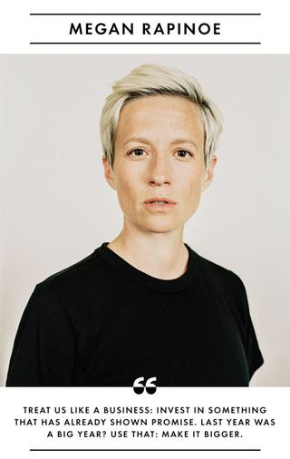

Aiming For Equality
Back in 2016 on March 29th, United States Women's National Soccer Team members Hope Solo, Carli Lloyd, Rebecca Sauerbrunn, Alex Morgan, and Megan Rapinoe filed a complaint to the federal government about the drastic difference in their pay compared to the United States Men's National Soccer Team. The women's national team has won the world cup three times, with each win they made $1.8 Million as of 2015. As of 2018, the men would make $9.3 million, however the men have never won the world cup. For qualifying for the world cup, the men's team makes $2.5 Million, where the women's team makes $345,000.00. Despite the women peforming better, the men's team manages to make millions more than the womens team.
Time For Change
As I mentioned previously, 5 star players for the United States Women's National Team filed a complaint to the federal government. Questions started when fans heard how much money the U.S. Women's National Team got for the historic win over Japan.They received $2 million. When the men's team lost in round sixteen of last year's tournament, they got $8 million.Women athletes are notoriously underpaid when compared with their male counterparts, and the U.S. women’s national soccer team represents just one sport where this dynamic plays out.

A Goal, but Still Not a Win
The United States Women's National Team did an outstanding job representing equality and unfair pay in their working atomosphere. This realization becoming known to the public eye definetley put the team in the right direction, but the real question is will they ever win the ongoing battle, or will they just leave with a few points?